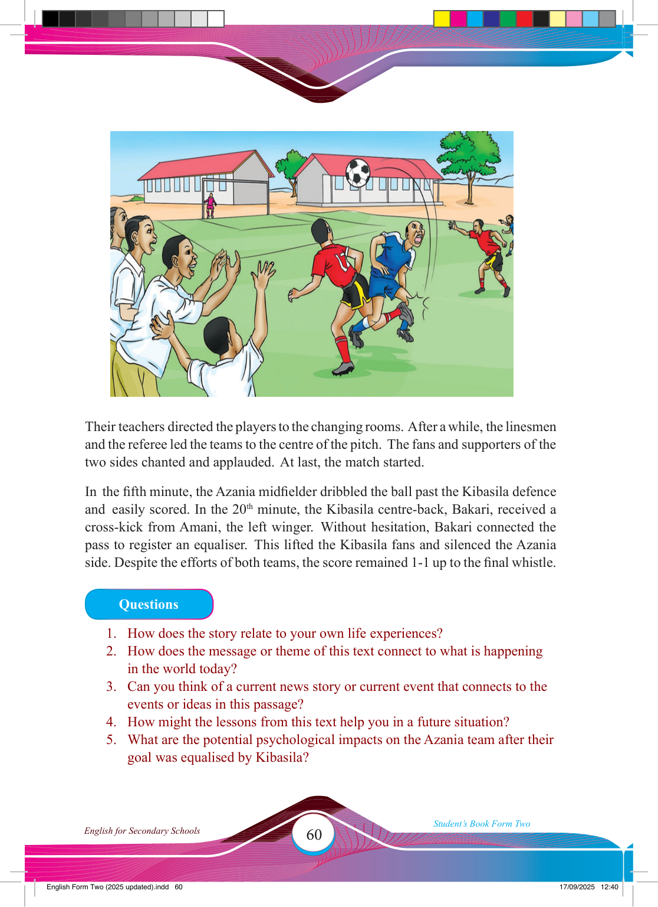

60
Student’s Book Form Two
English for Secondary Schools
Their teachers directed the players to the changing rooms. After a while, the linesmen
and the referee led the teams to the centre of the pitch. The fans and supporters of the two sides chanted and applauded. At last, the match started.
In the fi fth minute, the Azania midfi elder dribbled the ball past the Kibasila defence and easily scored. In the 20th minute, the Kibasila centre-back, Bakari, received a
cross-kick from Amani, the left winger. Without hesitation, Bakari connected the
pass to register an equaliser. This lifted the Kibasila fans and silenced the Azania side. Despite the efforts of both teams, the score remained 1-1 up to the fi nal whistle.
Questions
1. How does the story relate to your own life experiences?
2. How does the message or theme of this text connect to what is happening in the world today?
3. Can you think of a current news story or current event that connects to the events or ideas in this passage?
4. How might the lessons from this text help you in a future situation?
5. What are the potential psychological impacts on the Azania team after their goal was equalised by Kibasila?
17/09/2025 12:40